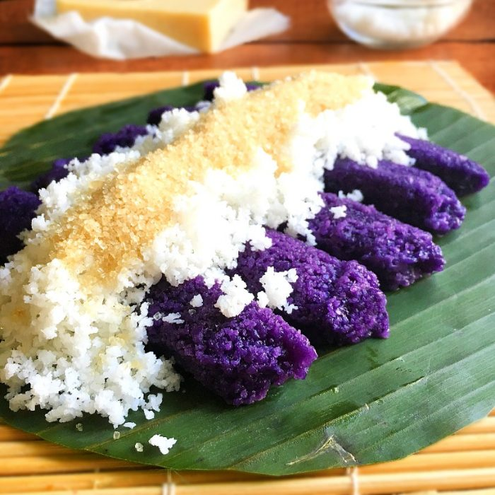

Puto Bumbong Recipe

Ingredients:
- 2 cups glutinous rice
- 1/2 cup black rice (pirurutong)
- 1/2 cup water
- Banana leaves, cut into squares
- Grated coconut
- Muscovado sugar
- Butter or margarine
- Cheese (optional)
Instructions:
- Soak the glutinous rice and black rice in water overnight.
- Drain and grind the rice into a coarse mixture.
- Pack the mixture into bamboo tubes and steam for about 10-15 minutes.
- Carefully remove the steamed rice cakes from the tubes.
- Place on banana leaves and spread butter or margarine on top.
- Sprinkle grated coconut and muscovado sugar over the rice cakes.
- Optionally, add grated cheese for extra flavor.
- Serve hot and enjoy!
Back to Menu